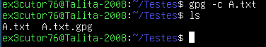
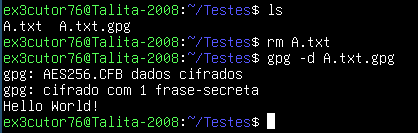

Como criptografar um arquivo:
Olá caro visitante! Você provavelmente já se perguntou, "como que eu criptografo um arquivo via terminal?" provavelmente
para proteger esse seu arquivo txt que não possui proteção nenhuma mesmo você zipando ele, bem aqui irei te mostrar como.
Ferramentas:
Tudo que vamos precisar é de uma ferramenta, chamada gpg, que sim ela vai ser perfeita para essa situação, afinal ela já foi
usada principalmente em um evento que acontecia na internet principalmente no 4chan, o Cicada 3301 e bem aqui está uma forma
de você instalar essa ferramenta: sudo apt install gpg
Sobre a ferramenta:
GPG ou também GNU Privacy Guard é uma ferramenta para proteger arquivos, essa ferramenta usa criptografia simétrica e assimétrica
e sim essa ferramenta é uma ferramenta open source, muito usado por pessoas que protegem seus arquivos e principalmente foi usada em um
caso da internet chamado Cicada 3301.
Criptografando um arquivo:
Como podem perceber no meu terminal tem um arquivo chamado A.txt que será nossa cobaia e certo podem perceber que dentro do arquivo
está escrito "Hello World!" e sim você verá mudanças.

Agora olhando bem meu terminal para criptografar use o comando: gpg -c (nome-do-arquivo).txt
Contexto do comando:
gpg --> Chama a ferramenta
-c --> Criptografar
(nome-do-arquivo).txt --> O arquivo que você quer criptografar
Ah e sim quando você fizer isso na sua tela irá aparecer uma mensagem pedindo pra você colocar senha
e que é com essa senha que você irá descriptografar o arquivo e percebe algo na imagem? o arquivo quando foi
criptografado ele não terminou com .txt e sim com .gpg
Descriptografando arquivo:

Como pode perceber na imagem ele pelo menos mostrou a mensagem que tinha no arquivo assim descriptografando o arquivo e bem eu usei o comando:
gpg -d (nome-do-arquivo).txt.gpg
Contexto do comando:
gpg --> Chama a ferramenta
-d --> Descriptografa
(nome-do-arquivo).txt.gpg --> Arquivo criptografado